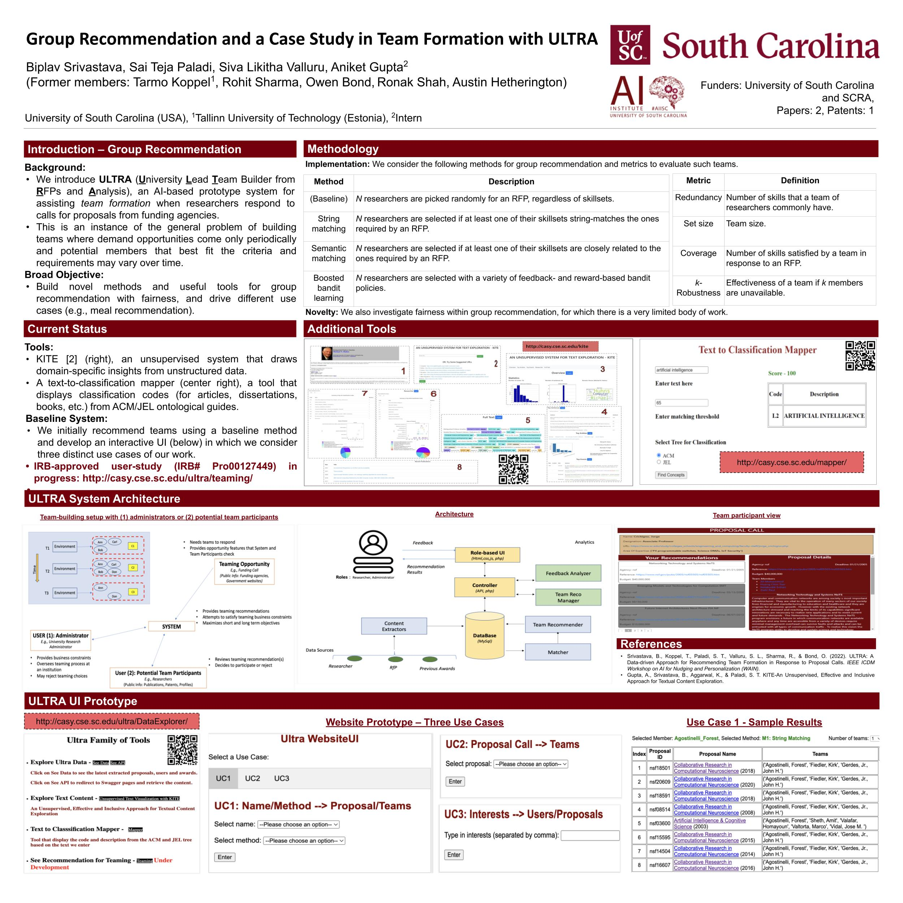

AI Teaming and Fairness
NEW! Our paper that presents a novel system to recommend teams using a variety of AI methods has been accepted to IAAI-AAAI'2024 and will receive the Innovative Application award.
Group Recommendation and
Fairness
Authors: Biplav Srivastava, Siva Likitha Valluru, Michael
Huhns, Sriraam
Natarajan
 We study the problem of group recommendation, an information exploration
paradigm that retrieves interesting items for users based on their profiles and past
interactions/activities/history. Existing literature encourages using greedy methods, genetic and heuristic
algorithms, topic diversification, and cost constraint bi-objective optimizations. Our objective is to build
novel methods and useful tools for group recommendation with fairness, and drive different use cases (e.g.,
meal recommendation).
We study the problem of group recommendation, an information exploration
paradigm that retrieves interesting items for users based on their profiles and past
interactions/activities/history. Existing literature encourages using greedy methods, genetic and heuristic
algorithms, topic diversification, and cost constraint bi-objective optimizations. Our objective is to build
novel methods and useful tools for group recommendation with fairness, and drive different use cases (e.g.,
meal recommendation).
The underlying research directions and applications are summarized in the
poster to the right (can be enlarged).
Team Formation
Technical Lead: Biplav Srivastava
Collaborators over the years:
Siva Likitha Valluru,
Sai Teja Paladi,
Michael Widener, Rohit Sharma,
Owen Bond,
Ronak Shah,
Austin
Hetherington
External Collaborators:
Aniket Gupta,
Siwen Yan,
Sriraam Natarajan,
Tarmo Koppel,
Sugata Gangopadhyay
Advisors: Michael
Matthews, Paul
Ziehl, Michael
Huhns, Danielle
McElwain
We introduce ULTRA (University
Lead Team
Builder from RFPs and Analysis), an novel AI-based system for
assisting team formation when researchers respond to RFPs from funding agencies. This is an instance of the
general problem of building teams when demand opportunities come periodically and potential members may vary
over time. The novelties of our approach are that we: (a) extract technical skills needed about researchers
and calls from multiple open data sources and normalize them using NLP techniques, (b) build teaming
solutions based on constraints, (c) computationally and qualitatively evaluate our system in two diverse
settings (US, India) to establish generality of our approach, and (d) create and publish a dataset that
others can use.
(This research study has been certified as exempt from
the IRB per 45 CFR 46.104(d)(3) and 45 CFR 46.111(a)(7) by University of South Carolina
IRB#Pro00127449.)
Representative Publications
- [2023] Promoting Research Collaboration with Open Data Driven Team Recommendation in Response to Call
for Proposals
The Thirty-Sixth Annual Conference on Innovative Applications of Artificial Intelligence (IAAI-24)
[Tool Websites at UofSC, IIT-R] [Demo Videos for UofSC, IIT-R] [Paper] [BibTex]
- [2022] ULTRA: A Data-driven Approach for Recommending Team Formation in Response to Proposal Calls.
IEEE ICDM Workshop on AI for Nudging and Personalization (WAIN)
[Paper] [BibTex]


Additional Tools
- [2022] KITE - An Unsupervised, Effective and Inclusive Approach for Textual Content Exploration.
[Tool Website] [Demo Video] [Paper] [GitHub] [BibTex]
KITE is an unsupervised system for exploring textual data which can generate insights from a general as well as a domain-dependent perspective consisting of holistic views, entity-centric view, events view, domain-specific interpretation using industry taxonomies and a detailed full-text view transparently connecting the document to insight elements.

Figure 3: Using KITE - [2022] A Text-to-Classification Mapper (Using ACM/JEL Subject Ontology Codes).
[Tool Website]
Mapper is a tool that takes the input as a text and matching threshold as a number and returns the ACM or JEL classification codes and description based on the input text.

Figure 4: Text-to-Classification Demo